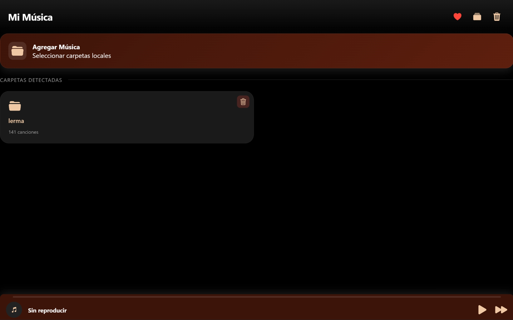
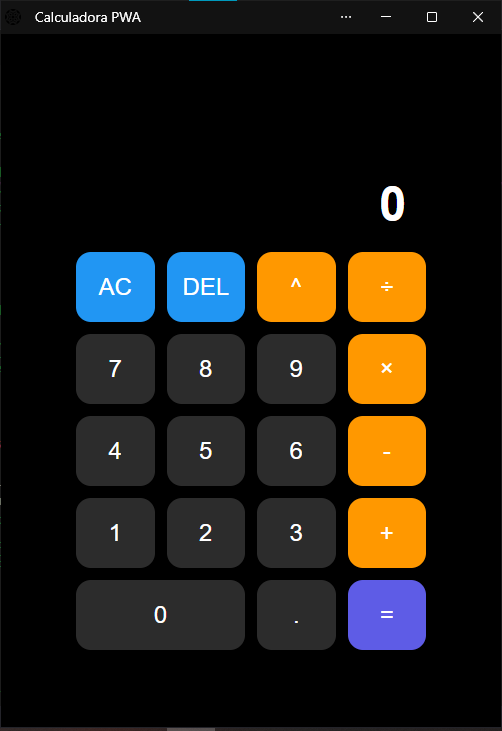

Version BetaMusic App
Reproductor de archivos locales con visualizador de frecuencias y soporte offline total. Sin servidores, 100% privado.
Explora mis proyectos web, desde reproductores PWA hasta herramientas de productividad. Privacidad, velocidad y diseño funcional.
VER PROYECTOS
Version BetaReproductor de archivos locales con visualizador de frecuencias y soporte offline total. Sin servidores, 100% privado.

En ProduccionEsta calculadora es una calculadora web que solo resuelve operaciones basicas
Este es mi "Entry Point" oficial. Aquí centralizo todas las versiones beta de mis repositorios de GitHub y las versiones finales desplegadas en Netlify.